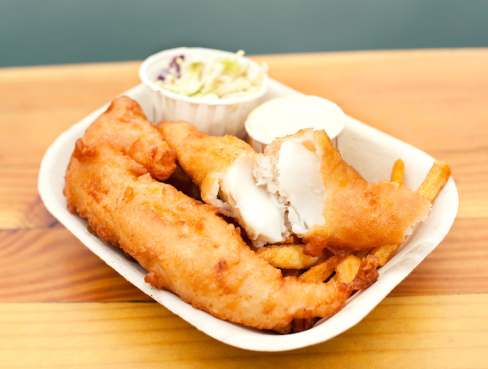
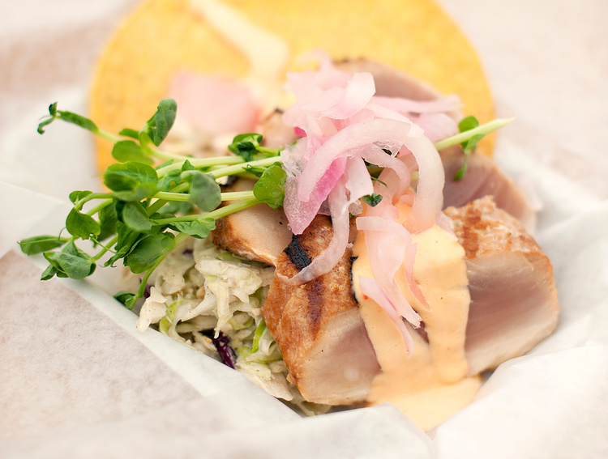
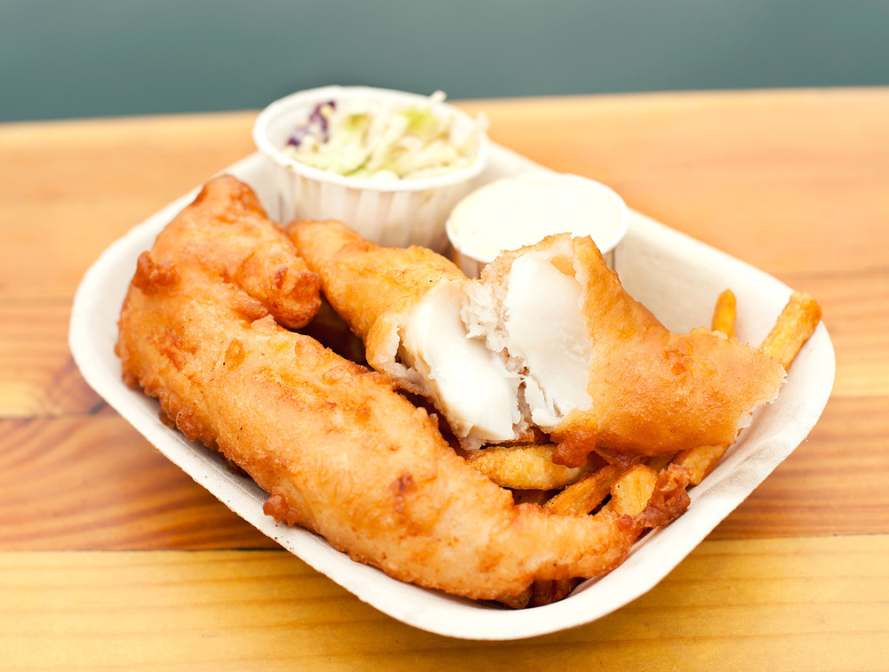
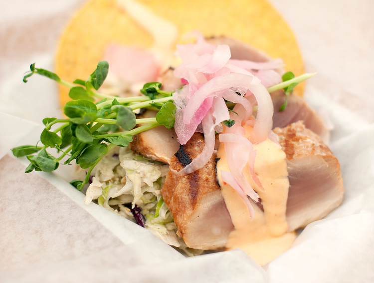

.jpg)

Red Fish Blue Fish offers online ordering for pick-up of Victoria’s favourite Fish & Chips, Tacones, West Coast & Wild Grilled or Tempura Fish Sandwiches, Grilled Seafood, Seafood Chowder and other sustainable seafood choices.
More details
Blue Fox Cafe is an all-day-breakfast cafe, close to downtown Victoria. It has a lively and fun atmosphere and has kept up its mainstay reputation through a commitment to quality ingredients like local free range eggs, Bond Bond’s Bakery toast, and made-from-scratch sauces and jams.
More details
Saveur Restaurant offers fine dining food in a casual urban setting. Award-winning chef, Robert Cassels, delivers French-inspired contemporary cuisine through playful and elegant tasting menus, using local ingredients wherever possible.
More details"For real,the the absolute best fish and chips I’ve ever had. Worth the wait. Great service too! Everything about it was perfect!"
"It was worth the long line up. The portion was generous to be shared. We enjoyed the seafood curry chowder very much. "
 



1006 Wharf St, Victoria, BC
(Open your Google Map)
Open daily, including holidays, 11am-8pm